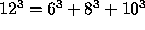

| Perfect Cubes |
For hundreds of years Fermat's Last Theorem, which stated simply that for n > 2 there exist no integers a, b, c > 1 such that , has remained elusively unproven. (A recent proof is believed to be correct, though it is still undergoing scrutiny.) It is possible, however, to find integers greater than 1 that satisfy the ``perfect cube'' equation (e.g. a quick calculation will show that the equation  is indeed true). This problem requires that you write a program to find all sets of numbers {a, b, c, d} which satisfy this equation for .
The output should be listed as shown below, one perfect cube per line, in non-decreasing order of a (i.e. the lines should be sorted by their a values). The values of b, c, and d should also be listed in non-decreasing order on the line itself. There do exist several values of a which can be produced from multiple distinct sets of b, c, and d triples. In these cases, the triples with the smaller b values should be listed first.
The first part of the output is shown here:
Cube = 6, Triple = (3,4,5) Cube = 12, Triple = (6,8,10) Cube = 18, Triple = (2,12,16) Cube = 18, Triple = (9,12,15) Cube = 19, Triple = (3,10,18) Cube = 20, Triple = (7,14,17) Cube = 24, Triple = (12,16,20)
Note: The programmer will need to be concerned with an efficient implementation. The official time limit for this problem is 2 minutes, and it is indeed possible to write a solution to this problem which executes in under 2 minutes on a 33 MHz 80386 machine. Due to the distributed nature of the contest in this region, judges have been instructed to make the official time limit at their site the greater of 2 minutes or twice the time taken by the judge's solution on the machine being used to judge this problem.